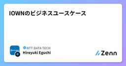
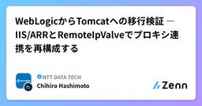
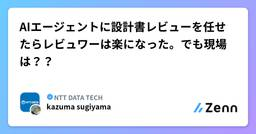
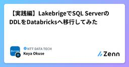

NTT DATA TECHのフィード
https://zenn.dev/p/nttdata_tech
NTT DATA公式アカウントです。 技術を愛するNTT DATAの技術者が、気軽に楽しく発信していきます。 当社のサービスなどについてのお問い合わせは、 お問い合わせフォーム https://nttdata.com/jp/ja/contact-us/ へお願いします。
フィード

IOWNのビジネスユースケース
NTT DATA TECHのフィード
はじめにこの記事では「IOWNの名前は知ってるけど、実際にどんなビジネスに使えるの？」という疑問にお答えするため、IOWNの特徴を活かしたB2B向けユースケースをご紹介します。 IOWNの特徴IOWN（アイオン: Innovative Optical and Wireless Network）の概要と特徴についてはこちらのサイトをご参照ください。https://www.nttdata.com/jp/ja/trends/data-insight/2025/0403/IOWNは、単に通信経路を光に置き換える技術ではありません。光の強みである大容量・低遅延・低消費電力を通信から...
4日前

Webの仕組みから考える、PHPの脆弱性について
NTT DATA TECHのフィード
はじめに2026年10月21日、PHPに存在する2件の重大な脆弱性が公表されました。組み合わせて「PHP2Shell」と呼ばれる問題で、条件がそろうと、外部からサーバー上で不正なコードを実行される恐れがあります。情報処理推進機構（IPA）も翌22日に注意喚起を公開しました。その後も追加の発表がなされているようですが、今回は、PHPとはどのようなもので、どういった仕組みに使われているのかを中心に説明いたします。 1. PHPとは ～ Webサイトが表示されるまでの仕組みPHPという名前を聞いたことがあっても、実際にどのような処理をしているのか、よく知らない方もいるかもしれません...
4日前

WebLogicからTomcatへの移行検証 ― IIS/ARRとRemoteIpValveでプロキシ連携を再構成する
NTT DATA TECHのフィード
1. はじめに本記事では、Oracle WebLogic Server（以下、WebLogic）からApache Tomcat（以下、Tomcat）への移行検証を紹介します。「次のシステム更改で、WebLogicをTomcatに移行するから。よろしく。」と上司から言われて、さて困りました。とはいえ、最初からものすごく難しく考えていたわけではありません。Oracle WebLogic Server Proxy Plug-In（以下、WebLogic Proxy Plug-In）をApplication Request Routing（以下、ARR）に置き換えて、Tomcatま...
4日前

Dreamforce 2026参加レポート：AIエージェントの業務活用とこれから
NTT DATA TECHのフィード
はじめに先日、米国サンフランシスコで開催されたSalesforce社主催の年次カンファレンス「Dreamforce 2026」に現地参加してきました。私は普段、Salesforceが提供するiPaaS製品であるMuleSoftを用いたプロジェクトに携わっており、システム連携基盤の設計・開発・運用を中心に技術支援を行っています。今回Dreamforceへ参加した目的は、SalesforceやMuleSoftをはじめとした最新の技術・製品動向や、各社のAI活用事例を現地で収集し、その知見を今後の提案活動やプロジェクトでの技術支援に還元することです。昨年のDreamforce 20...
5日前

AIエージェントに設計書レビューを任せたらレビュワーは楽になった。でも現場は？？ 1
1
NTT DATA TECHのフィード
はじめに：AIが賢くなるほど、現場は楽になる？!この記事の要点AIレビューを用いることで設計書におけるレビュワーの作業が体感1時間程度から数分〜数十分にでも、レビュワーがしていた「判断」は、設計書を書いたエンジニアに移っただけだった「判断」にはエネルギーが必要、それは誰がコストを支払うべき？役割整理から今後のSIerのあるべき姿を想像する!この記事は商用システム開発での取り組みをもとにしています。構成や具体例は一般化しており、特定の顧客、クラウドサービス、システムの仕様を示すものではありません。また、効果の数値もぼかして書いているため、定性的な点はご容赦くださ...
5日前

【実践編】Agentic Code ConverterでT-SQLをDatabricks SQLへ変換してみる
NTT DATA TECHのフィード
本記事は全3回シリーズの第3回です。第1回ではLakebridgeの全体像を、第2回ではBladeBridgeとSwitchによるSQL ServerのDDL変換とDatabricksへの適用を紹介しました。最終回となる本記事では、第2回で作成したテーブルと検証データを引き継ぎ、Agentic Code Converterによる3種類のT-SQLの変換から、実行・結果確認までを試します。 第1回：Lakebridgeの機能紹介 第2回：Lakebridgeを触ってみる 1. はじめに前回のLakebridge実践編では、SQL ServerのDDLを変換してDa...
6日前

【実践編】LakebrigeでSQL ServerのDDLをDatabricksへ移行してみた
NTT DATA TECHのフィード
本記事は全3回シリーズの第2回です。第1回では、Databricksへのマイグレーションを支援するLakebridgeの概要と各機能を紹介しました。本記事では、Analyzer・BladeBridge・Switchを使ってSQL ServerのDDLを変換し、Databricksへの適用から動作確認までを行います。第3回では、今回作成したテーブルを使ってAgentic Code ConverterによるT-SQL変換を検証します。 第1回：Lakebridgeの機能紹介 1. はじめに既存のSQL ServerからDatabricksへ移行する場合、SQLコードの...
6日前

【理論編】Databricks Lakebridgeとは？DWHマイグレーションを支援する機能を整理してみた
NTT DATA TECHのフィード
本テーマは全3回構成です。第1回となる本記事ではLakebridgeの全体像と各機能を紹介します。第2回ではLakebridgeのBladeBridge・Switchを用いたDDL変換を実践します。第3回ではAgentic Code ConverterによるT-SQL変換を実践します。 0. 簡単に自己紹介はじめまして。私はNTT DATAでクラウド・データ／AI領域のシステム開発に携わっています。これまでAWS（Amazon Web Services）環境でのシステム開発を経験し、現在はDatabricksを活用したデータ・AI基盤やMLOpsの設計構築に取り組んでき...
6日前

Dreamforce 2026参加レポート：Salesforceが描くAgentic Enterprise
NTT DATA TECHのフィード
はじめに2026年9月、Salesforceが開催する年次イベント「Dreamforce 2026」に参加しました。Dreamforceでは、Salesforceの最新製品やロードマップだけでなく、AIを含めた今後の企業システムのあり方について、さまざまな発表が行われます。昨年のDreamforce 2025でも大きなテーマとなっていたのが、人とAIエージェントが協働して業務を進める「Agentic Enterprise」です。2025年にもAgentforceを中心に、AIエージェントを企業でどのように構築し、管理し、業務へ組み込んでいくかという方向性は示されていました。...
7日前

【イベント参加レポート】現場で使える「データの出口」とは｜Squadbase Community Meetup #0
NTT DATA TECHのフィード
【イベント参加レポート】現場で使える「データの出口」とは｜Squadbase Community Meetup #0 1. はじめにデータ基盤やBIを整備し、ダッシュボードまで用意したのに、現場ではCSVをダウンロードして手元で加工している。データ活用を推進している方にとって、何度も向き合ってきた課題ではないでしょうか。最近は生成AIによって、データを分析したり、ダッシュボードの画面を作ったりするハードルが大きく下がりました。一方で、「現場で使われない」という課題までは、それだけで解消されるわけではありません。2026年9月30日に開催された「Squadbase Commu...
10日前
Snowflake World Tour Tokyo 2026に新入社員が参加してみた！
NTT DATA TECHのフィード
はじめにこんにちは、2026年4月入社の新人エンジニア、yasunoriです。9月10日（木）・11日（金）に開催されたSNOWFLAKE WORLD TOUR TOKYO 2026に参加してきました！私は現在、データパイプラインの開発を担当しており、主にデータの取り込みや加工を通じてSnowflakeを学んでいます。新入社員ということもあり、業務に携わるまではSnowflakeについて全く知りませんでしたが、今回のイベントはSnowflakeへの理解を広げるよい機会になりました。参加前は「初心者の自分でも内容についていけるだろうか」と少し不安もありましたが、基礎から学べるセ...
13日前
Informatica IDMCのMDMでデータマネジメント 〜承認ワークフローをカスタマイズしてみた〜
NTT DATA TECHのフィード
はじめにSalesforce社のInformatica（インフォマティカ）が提供するクラウドデータマネジメントプラットフォーム「Intelligent Data Management Cloud」（※1、以下IDMC）では、マスタデータ管理（MDM：Master Data Management）ソリューションがSaaSとして提供されています。※1. Intelligent Data Management Cloud略称はIDMC。旧称はIICS。クラウドデータマネジメントプラットフォーム。MDMとは、企業内に散在する顧客・製品・取引先などのマスタデータを統合・管理し、全社で...
13日前
企業のAI、どこで動かす？どう管理する？｜Nutanix .NEXT On Tour Tokyo 2026 GPU基盤担当による参加レポート
NTT DATA TECHのフィード
はじめにこんにちは！NTTデータにて1GPUにおけるトークン処理量を向上させるべく、日々GPUリソース最適化の検証を行っているエンジニアの居倉です。2026年9月8日、Nutanixのイベント「.NEXT On Tour Tokyo 2026」に参加してきました。今回は3人でイベントに参加し、それぞれが聴講したセッションを記事にすることになりました。第1回となる本記事では、私が参加したAI基盤の配置とAI利用の管理に関する2つのセッションを紹介します。こんな方に読んでいただきたい記事ですAI基盤の企画・設計・運用に関わっている方GPUや生成AI基盤のリソース最適化に興味が...
14日前
Bedrock Managed Agentsを実測 — モデルはsession roleで制限でき、操作はdata eventに残る
NTT DATA TECHのフィード
1. はじめにマネージドなエージェント実行基盤を業務に入れる前には、「どのモデルを使わせるかを IAM で縛れるか」「誰が何をしたかを後から追えるか」を確認しておく必要があります。エージェントはモデル呼び出しとコマンド実行を自律的に繰り返すため、ここが曖昧なままだと、利用範囲の制御も監査も運用設計に落とせません。AWS（Amazon Web Services）は 2026/09/29 に、Amazon Bedrock Managed Agents（powered by OpenAI、以下 BMA）をPublic Previewとして発表しました。提供リージョンは US East ...
18日前
Pegasus 1.5の動画セグメンテーションをBedrockで実測 — 合成動画で画面・話者の境界誤差を確認
NTT DATA TECHのフィード
1. はじめに動画を検索や分析に使うには、「どこで何が起きたか」を開始・終了時刻つきのデータにする必要があります。従来の動画言語モデルでも、プロンプトでタイムスタンプを求めればそれらしい答えは返ります。ただ、その時刻がどれだけ正確なのかは、正解が分かっている動画で測らないと判断できません。TwelveLabs の Pegasus 1.5 は、Amazon Bedrock のモデルカード上の提供開始日が 2026/10/08（2026/10/13 確認）の動画理解モデルです。Pegasus 1.2 からの主な追加点は analysis_mode: "time_based_metad...
18日前
【PV連載 Vol.2】virshで始める仮想化入門 ～仮想マシンの作成・接続・削除を体験する～
NTT DATA TECHのフィード
はじめにNTT DATAの加藤です。私たちは、仮想化基盤を管理・運用するサービス「Prossione Virtualization（以下、PV）」を開発しています。この記事は「Prossione Virtualizationを理解する・使ってみる」シリーズ Vol.2 です。前回の「【PV連載 Vol.1】仮想化とは？ハイパーバイザーとVM・コンテナの違い」では、仮想化の仕組みと、それを継続して運用する難しさを紹介しました。今回は実際に手を動かし、Linux上に仮想マシンを1台作ります。コマンドを打ちながら、仮想マシンに用いるイメージの準備から、仮想マシンの作成、接続、停止、...
18日前
Neo4jでLLMベースのナレッジグラフ構築を試してみた
NTT DATA TECHのフィード
はじめに近年、LLMを活用した検索では、文書の意味的な類似性だけでなく、情報同士の関係性をたどって回答の根拠を得るアプローチにも注目が集まっています。こうした関係性を明示的に扱う代表的な仕組みがナレッジグラフです。一方で、ナレッジグラフを一から人手で構築するには大きなコストがかかります。そこで、LLMを利用して文章からエンティティやリレーションを抽出し、ナレッジグラフを自動構築するアプローチがあります。本記事では、Neo4j GraphRAG for PythonのSimpleKGPipelineを利用し、スキーマを指定しないFREE、LLMがスキーマを推定するEXTRACTE...
19日前
System One型のOSSモデルLayaを使ってテーブルデータの分類問題を解いてみた
NTT DATA TECHのフィード
この記事の対象者System One Model(本記事ではLaya)を用いたテーブルデータの分類問題に興味がある方Layaの実装に興味がある方 はじめに2026年9月にリリースされたJevと呼ばれるモデルが話題になっています。このモデルは通常の生成AIと異なり、文章を一切生成せず、高速な「判断」と確率・確信度のみを出力する、TypeSafe AIが開発した「System One Model」と呼ばれる新しいカテゴリのモデルです。System Oneとは、心理学者ダニエル・カーネマンの著書『ファスト＆スロー』で紹介されている、人間の素早く直感的な思考「システム1（速...
20日前
Databricks Lakebridgeを構築してTeradata SQLを変換してみた
NTT DATA TECHのフィード
Databricksへの移行を支援するツールを試してみた 1. はじめにNTTデータの丹羽です。Databricks Championとしても活動しています。近年、既存のデータウェアハウス（DWH）からDatabricksへのマイグレーションを検討する機会が増えています。Databricksでは、Teradataなどの既存DWHからDatabricksへの移行を支援するツールとして、Lakebridgeが提供されています。本記事では、Databricks CLIおよびLakebridgeをセットアップし、TeradataのソースコードをDatabricks向けに変換するま...
20日前
Databricksへの移行検証を通じて確認した課題・対策
NTT DATA TECHのフィード
TeradataからDatabricksへの移行検証で判明した課題・対策を紹介します。 1. はじめにNTTデータの丹羽です。Databricks Championとしても活動しています。Databricksが提供するマイグレーション支援ツール Lakebridge を利用し、TeradataからDatabricksへの移行を検証しました。本記事では、Lakebridgeの機能紹介ではなく、TeradataからDatabricksへの移行検証を通じて分かった効果・課題・適用範囲と、その対策について紹介します。!本記事は検証結果に基づくものであり、製品の性能・結果を保証す...
20日前